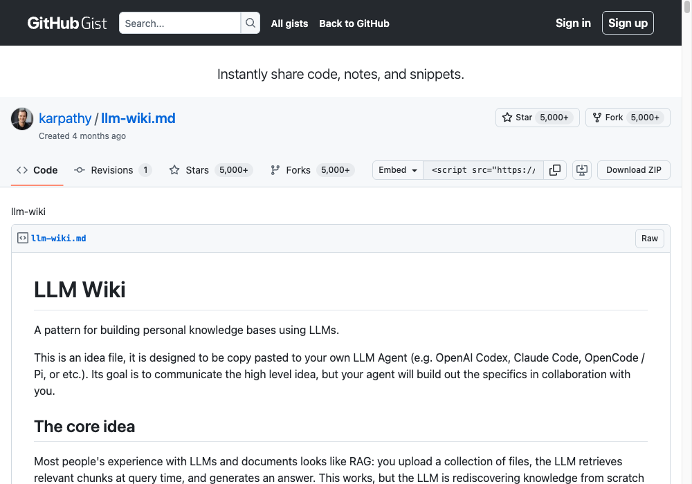
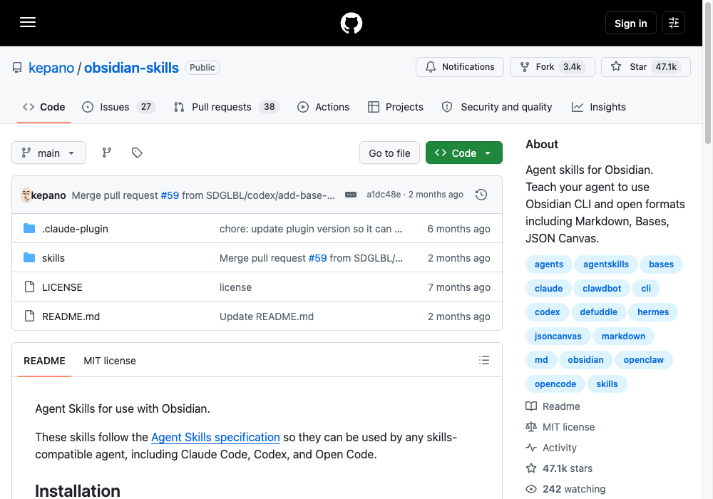
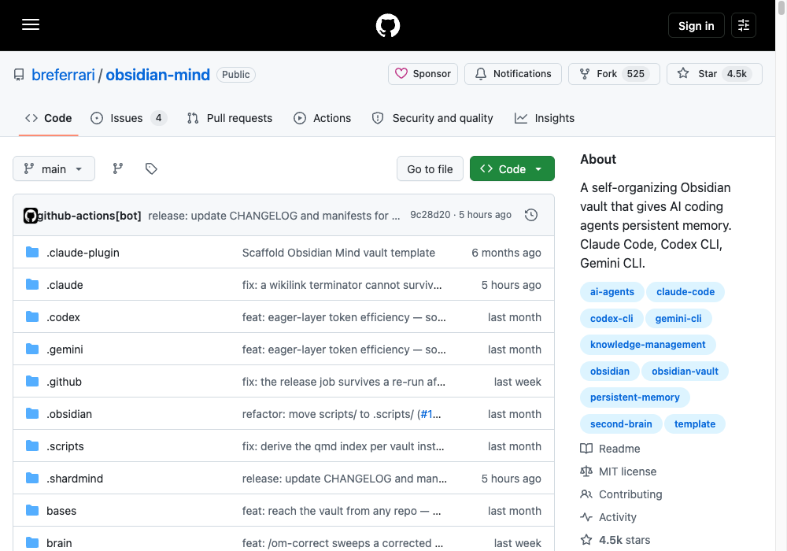
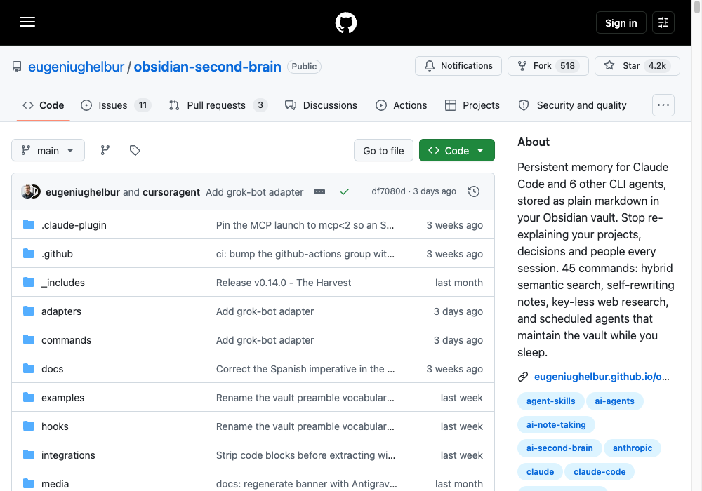

Obsidian × Claude Code
Four GitHub repos. Unlimited, self-improving memory.
Claude forgets everything. Obsidian fixes that.
By default, every Claude Code session starts from zero — no memory of yesterday, no context from last week. Connect Obsidian the right way and your vault becomes Claude's long-term brain instead.
This pattern was formalized by Andrej Karpathy — a founding member of OpenAI and former Tesla AI director. His insight: don't use AI to search your notes, use it to build and maintain a wiki that gets smarter over time. The four repos below make that work inside Claude Code.
Connect Obsidian to Claude — 3 steps
Do this before installing any repos below — they all build on this foundation.
Install Obsidian and create your vault
Go to obsidian.md, download the app, click "Create new vault," and name it anything — My Brain, OS, Second Brain.

Connect Claude to your vault
In your Claude Code project, open or create CLAUDE.md in the project root and add this block (swap in your real vault path):
## Memory My Obsidian vault is located at: [PASTE YOUR FOLDER PATH HERE] Always read from this vault at the start of every session for context about me, my business, and my goals. When saving notes or insights, write back to this vault using Obsidian markdown format — wikilinks ([[like this]]), frontmatter at the top of each file, and proper backlinks.
Without the format instruction, Claude writes plain markdown your vault can't parse — graph view stays empty and notes become orphans.
Add context about yourself
Create a note in Obsidian called About Me:
# About Me Name: [Your name] Business: [What you do] Goals: [What you're building toward] Current projects: [What's active right now] My audience: [Who you create for] Decisions made: [Things you don't want to re-debate]
Install these four, in this order.
Each builds on the previous. For each one, paste the link directly into Claude Code — it downloads and installs automatically.
Karpathy's LLM Wiki
by Andrej Karpathy — founding member of OpenAI, former Tesla AI director

The structural foundation — gives your vault a three-layer architecture Claude follows for everything it writes: raw source material, a wiki Claude maintains and cross-references, and output config for how the vault stays organized.
https://gist.github.com/karpathy/442a6bf555914893e9891c11519de94f
obsidian-skills
by kepano — CEO of Obsidian

Teaches Claude the exact Obsidian file format — correct frontmatter, wikilinks, embeds, callouts. Every other skill here depends on this being right.
https://github.com/kepano/obsidian-skills
obsidian-mind
by breferrari

The live bridge between Claude and your vault — real-time read/write access, pulling only the notes relevant to what you're working on. Runs automatically at the start of every session.
https://github.com/breferrari/obsidian-mind
obsidian-second-brain
by eugeniughelbur

The most powerful of the four. Claude saves what it finds mid-conversation without being asked, rewrites existing pages, and resolves contradictions. Scheduled agents run in the background — morning briefings, nightly consolidation, weekly reviews.
https://github.com/eugeniughelbur/obsidian-second-brain
This is what agentic systems look like.
Most people use Claude Code to write code faster — that's not what this is. Once your vault is set up this way, it becomes the brain of an autonomous system: workflows live in the vault, findings get saved back to it, and every session Claude reads what's relevant, does the work, and writes what it learned back in.
The shift: from using Claude as a tool you prompt, to deploying it as a system that runs itself.